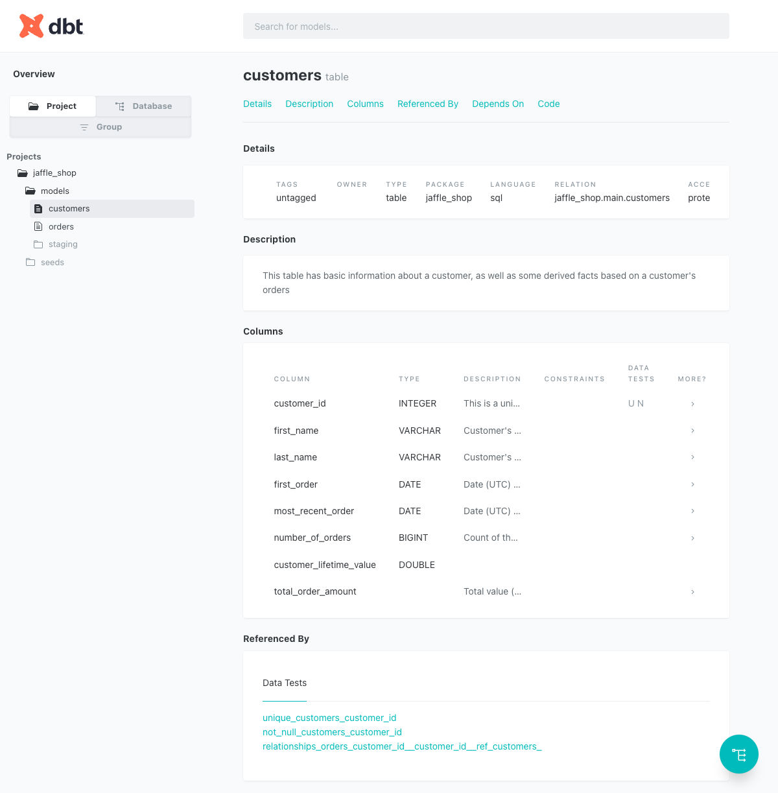
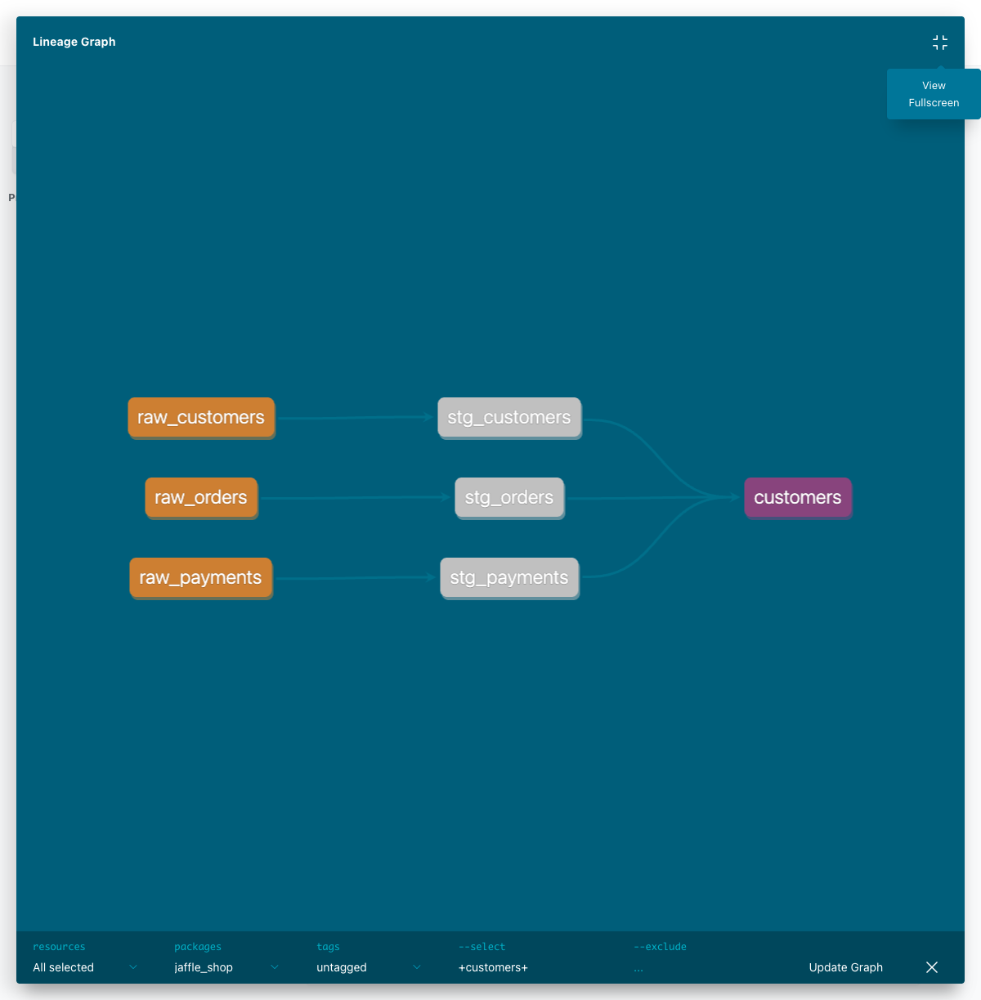
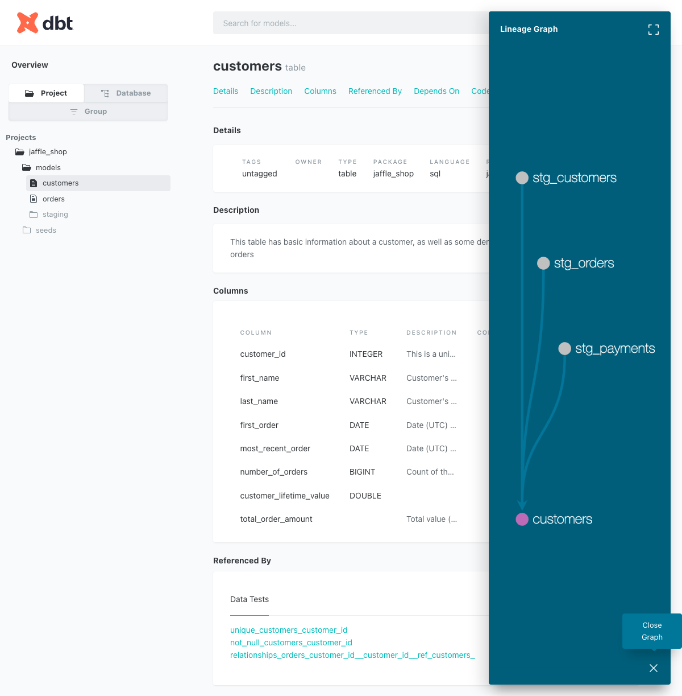

계획서의 "dbt 골격" 단계를 jaffle_shop 데모로 1회전 돌렸다. 핵심은 dbt의 3가지 동작을 눈으로 확인한 것:
dbt build 한 방으로 seed 적재 → 모델 생성 → 테스트가 의존 순서대로 실행됨
② 컴파일{{ ref('...') }} 가 컴파일 시 실제 DB 식별자로 치환됨 (Jinja → SQL)
③ 계보모델 간 의존이 DAG(lineage 그래프)로 자동 생성됨 — raw → stg → marts
dbt 프로젝트는 "폴더 규칙"이 곧 동작이다. 어느 폴더에 무엇을 두느냐가 dbt가 그것을 어떻게 다룰지를 결정한다.
jaffle_shop_duckdb/
├── dbt_project.yml # 프로젝트 정의 · materialization 기본값 · 노드 색
├── profiles.yml # 연결 정보(DuckDB 파일 경로) — DBT_PROFILES_DIR로 지정
├── seeds/ # CSV → dbt seed 시 실제 테이블로 적재
│ ├── raw_customers.csv # 100행
│ ├── raw_orders.csv # 99행
│ └── raw_payments.csv # 113행
├── models/
│ ├── staging/ # +materialized: view (가벼운 정제·표준화)
│ │ ├── stg_customers.sql
│ │ ├── stg_orders.sql
│ │ ├── stg_payments.sql
│ │ └── schema.yml # staging 모델의 테스트 정의
│ ├── customers.sql # +materialized: table (마트 — 고객 집계)
│ ├── orders.sql # +materialized: table (마트 — 주문 집계)
│ └── schema.yml # 마트 모델의 설명 + 테스트
└── target/ # ⚙️ dbt가 생성: 컴파일된 SQL · manifest · catalog
├── compiled/... # Jinja가 풀린 순수 SQL (ref 치환 확인 지점)
└── run/... # 실제로 DB에 실행된 DDL/DML같은 SQL이라도 materialization 설정에 따라 물리 객체가 달라진다. jaffle은 폴더 단위로 기본값을 준다:
CSV → 실제 테이블
node_color: bronze
+materialized: view
node_color: silver
+materialized: table
node_color: gold
bronze / silver / gold)이 뒤의 lineage 그래프에서 노드 색으로 그대로 나타난다 — 설정과 시각화가 1:1로 연결됨을 직접 확인.START_1차.md의 STEP을 따라 진행. "행위 → 산출물" 관점으로 정리.
venv 생성 후 dbt-duckdb 한 방 설치 (dbt-core + duckdb 어댑터 + duckdb 라이브러리 동시).
python3 -m venv venv && source venv/bin/activate
pip install dbt-duckdb
dbt --version # Core 1.10.22 / duckdb 1.10.0 확인산출물: dbt-poc/venv/ · dbt CLI 사용 가능
레포 clone 후 프로젝트 폴더 안에서 빌드. (Python 3.9 → dbt 1.10 고정이라 --no-version-check 필요)
cd jaffle_shop_duckdb
export DBT_PROFILES_DIR="$PWD" # 이 폴더의 profiles.yml 사용
dbt build --no-version-check산출물: jaffle_shop.duckdb(~1.5MB) 생성 · target/에 컴파일·실행 SQL · PASS=28
컴파일된 SQL과 원본을 대조하고, DuckDB에 실제로 생긴 객체를 조회.
cat target/compiled/jaffle_shop/models/customers.sql
python -c "import duckdb; con=duckdb.connect('jaffle_shop.duckdb'); print(con.sql('show tables'))"산출물: ref() → 완전수식 식별자 치환 확인 · 8개 객체(raw/stg/마트) 확인
dbt docs generate로 catalog 생성 후 dbt docs serve로 브라우저에서 lineage 확인 (이 노트의 캡처들).
산출물: target/catalog.json · 브라우저 lineage DAG
모델 한 줄 수정 후 dbt run -s, not_null 컬럼에 null 넣어 테스트 실패 메시지 보기. Olist 본편에서 직접 모델을 작성하며 체득 예정.
dbt build가 실제로 한 일출력 마지막 줄: Finished running 3 seeds, 2 table models, 20 data tests, 3 view models … PASS=28 WARN=0 ERROR=0 SKIP=0
| 리소스 | 개수 | 무엇 | 결과 |
|---|---|---|---|
| seeds | 3 | raw_customers / raw_orders / raw_payments (CSV → 테이블) | 적재 |
| view 모델 | 3 | stg_customers / stg_orders / stg_payments | 생성 |
| table 모델 | 2 | customers / orders (마트) | 생성 |
| data tests | 20 | unique · not_null · accepted_values · relationships | 전부 PASS |
build는 seed/model/test를 하나의 DAG로 묶어 의존 순서대로 실행한다. 관찰된 순서는 seed 적재 → stg_*(view) → stg 테스트 → customers/orders(table) → 마트 테스트. 상위가 실패하면 하위는 SKIP되는데, 이번엔 전부 PASS라 SKIP은 발생하지 않았다. (SKIP 재현은 품질·이력 주차의 과제)테스트는 SQL이 아니라 YAML 선언으로 붙인다. 예: staging의 schema.yml
models:
- name: stg_orders
columns:
- name: order_id
tests:
- unique # 중복 없음
- not_null # null 없음
- name: status
tests:
- accepted_values: # 허용된 값만
arguments:
values: ['placed','shipped','completed','return_pending','returned']마트 orders의 customer_id엔 relationships 테스트(→ customers.customer_id 참조 무결성)가 붙어 있어 4종이 모두 등장한다.
ref() 가 컴파일되며 바뀐다dbt의 마법은 여기에 있다. 모델은 Jinja 템플릿이고, dbt가 이를 순수 SQL로 컴파일하면서 ref()를 실제 테이블 식별자로 치환한다. 그래서 모델 간 의존이 자동으로 추적된다.
select * from {{ ref('stg_customers') }}select * from "jaffle_shop"."main"."stg_customers"관찰: ref('stg_customers') → "<database>"."<schema>"."<model>" 즉 "jaffle_shop"."main"."stg_customers" 3단 완전수식 식별자로 치환됨. 하드코딩한 테이블명이 아니라 ref()를 쓰기 때문에 dbt가 의존을 알고 실행 순서를 잡을 수 있다.
show tables)한 jaffle_shop.duckdb 파일 안에 raw(테이블)·stg(view)·마트(table) 8개가 공존

dbt docs의 customers 모델 상세. 상단 RELATION=jaffle_shop.main.customers, TYPE=table. 컬럼별 타입·설명·테스트(customer_id에 U·N)와 하단 "Referenced By"(이 모델을 참조하는 테스트들)까지 자동 문서화된다.ref()로 묶인 의존 관계를 dbt가 DAG로 시각화한다. manifest에서 추출한 부모 관계는 다음과 같다:
customers <- [stg_customers, stg_orders, stg_payments]
orders <- [stg_orders, stg_payments]
stg_customers <- [raw_customers]
stg_orders <- [raw_orders]
stg_payments <- [raw_payments]
dbt_project.yml의 node_color 설정과 정확히 일치한다. 하단 --select +customers+는 customers의 조상·자손을 모두 보겠다는 노드 선택 문법.
ref()로부터 자동 생성된 것. 모델이 수백 개로 늘어도 의존·영향 범위·실행 순서가 코드(=ref)에서 그대로 도출된다 — 이것이 dbt가 "변환 계층의 표준"이 된 이유.| 항목 | 실습으로 확인한 사실 |
|---|---|
ref() 치환 형태 | 막연히 "테이블명으로 바뀐다"가 아니라 "db"."schema"."name" 3단 완전수식으로 치환됨(DuckDB 어댑터 기준). compiled SQL을 직접 열어야 체감된다. |
| materialization = 물리 객체 | stg_*는 view, 마트는 table로 실제로 다르게 생성됨. show tables에 view도 함께 보인다. 같은 SQL이라도 폴더 설정이 객체 종류를 결정. |
build 위상정렬 | seed·model·test가 한 DAG로 묶여 의존 순서대로 실행. 상위 실패 시 하위 SKIP(이번엔 전부 PASS라 미발생). |
| Python 3.9 → dbt 1.10 고정 ⚠️ 환경 제약 | 계획서에 없던 제약. jaffle 레포가 dbt≥1.11을 요구해 매 명령에 --no-version-check 필요. 근본 해결은 Python 3.11+로 venv 재생성(→ dbt 1.11). |
export DBT_PROFILES_DIR="$PWD" 와 export DBT_VERSION_CHECK=false 두 개를 잡아두면 이후 dbt build·docs serve 등을 플래그 없이 깔끔하게 칠 수 있다.| Track A 1차 완료 기준 | 상태 |
|---|---|
| jaffle로 dbt 전체 흐름 1회전 (build·ref·lineage·로그) | ✅ 완료 |
| Olist로 staging→intermediate→marts + generic/singular 테스트 | 다음 본편 |
| snapshots(SCD2) 1회 관찰 · docs lineage 확인 | 예정 |
| (선택) TPC-H 소규모 정규화 모델링 | 선택 |
실제 브라질 이커머스 주문 ~10만 건의 9개 관계형 CSV로, jaffle에서 본 흐름을 직접 모델을 작성하며 확장한다. 조인·파생(intermediate), 집계 마트(fct_daily_sales), generic+singular 테스트, snapshots(SCD2)까지.
olist_orders → stg_orders → fct_orders / fct_daily_sales
olist_customers → stg_customers → dim_customers
olist_order_items → stg_order_items → int_order_enriched (조인·파생)
선결: Olist CSV는 Kaggle 다운로드(계정 필요) — 데이터 확보 방식부터 정한 뒤 staging 작성.